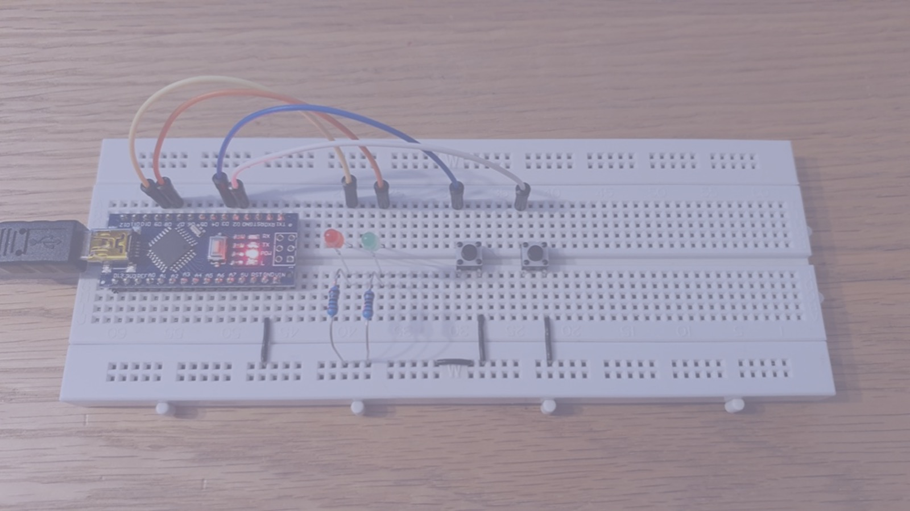

8 Introduction to Assembly Language
Presentation version of these notes.

Introduction
So far in this course a number of topics have been covered including
In this lecture we will study assembly language which is a low level language that provides a one-to-one mapping between mnemonic instructions and the machine code that is executed on the microcontroller.
This will allow you to see how complex high-level instructions and functions in C are written in assembly language and the final program that gets transferred to the microcontroller.
Topics discussed
In this lecture we will present an introduction to assembly language, including program structure and syntax as well as operation classifications.
We will also revisit the Direct Port Manipulation in C example from Digital I/O Example Program and translate this into assembly language looking at some of the key instructions involved.
Contents

8.1 Machine Code and Assembly Language

This Photo by Unknown Author is licensed under CC BY-SA
8.1.1 Machine code
Programs are stored on a microcontroller as a series of binary codes located within sequential memory addresses …
… this is known as machine code1.
The program in our microntroller looks like this
1000101010110001 1000001101111111 1000101010111001
1000010010110001 1000001101100000 1000010010111001
1000010110110001 1000110001111111 10000101101110018.1.2 So what is wrong with machine code?
A photograph showing some machine code2
Well nothing really … if you are a computer!
Otherwise … if you’re a human…3
… machine code is difficult to:
- Write,
- Read,
- Understand,
- Debug,
and most importantly
- Maintain
Instead, instructions can be written in a mnemonic form termed assembly language and then translated into machine code by an assembler.
8.1.3 Assembly Language
Every CPU (or family of CPUs) has an instruction set where each operation that can be performed is represented by a certain binary combination.
The next step up in language levels is to represent each of these binary patterns with a short mnemonic.
Programs written using these mnemonics are known as assembly language programs4.
ADC - Add with carry. Extracted from the Atmel ATmega328 reference manual.
8.1.4 A Short history of assembly languages
Assembly languages were first developed in the 1950s and were referred to as 2nd generation programming languages.
Assembly language is a low level language that uses mnemonic codes (symbols) to represent machine code instructions, rather than using the instructions’ numeric (binary) values.
Essentially, assembly languages are a much more readable but directly translatable representation of machine code.
Assembly language is commonly called just assembly, ASM, or symbolic machine code.
Despite the giant leap from machine code to assembly language, by the 1980s its use had largely been overtaken by higher-level languages, such as Fortran and C, and more recently Python, for many applications.
8.1.5 Why learn low level languages
- High Level Language (HLL) programs are designed to be independent of a particular machine architecture.
- As a result, they rarely take into account any special features of the machine – features which are commonly available to assembly language programmers.
- Assembly language is therefore good for hardware-specific jobs such as device drivers.
- If you understand assembly language, you’ll have an appreciation for the compiler, and you’ll know exactly what it is doing with HLL statements.
- Once you see how compilers translate seemingly innocuous statements into a machine code, you will begin to understand how HLL code could be optimised.
- Good assembly language programmers make better HLL programmers because they understand the limitations of the compiler and they know what it is doing with their code.
As well as these points, assembly programmers will have a better understanding of
- how data is represented in memory and other external devices;
- how processors access and execute instructions and how instructions access and process data;
- how a program accesses external devices – I/O;
- how to write efficient code as it requires less memory and execution time.
8.1.6 Why do people use assembly language?
In short:
- Speed - assembly language programs are generally the fastest programs around (up to ten times faster that optimized HLL programs (Hyde 2010)5.
- Space - assembly language programs are often the smallest.
- Capability - you can do things in assembly which are difficult or impossible in HLLs.
- Knowledge - your knowledge of assembly language will help you write better programs, even when using HLLs.
- Reverse Engineer/modify (Hack) pre-assembled programs.
8.2 Introduction to Assembly Language
This Photo by Unknown Author is licensed under CC BY-SA
8.2.1 Assembly Language 101
An assembly language program consists of a series of instructions to an assembler which will then produce the machine code program that is loaded to the microcontroller.
A program is written as a sequence of statements - one statement per line:
- Lines can be empty to separate sections of code.
- Statements cannot span multiple lines.
Each statement contains up to four fields each separated by one or more space or tab characters as shown below:
All statements must have something in the Operator field, but the label, operand and comment fields can be empty.
8.2.1.1 Assembly language labels
The label field is used to create a reference point in the program than can be used to identify/locate a collection of instructions.
Labels must follow a set of rules and a particular format:
- All labels must be unique and cannot use system reserved phrases.
- All labels must start with a letter.
- Labels can contain letters, numbers, and special characters (symbols, such as
@,$,_` ). - Labels that don’t begin at column 1 must be followed by a colon character (
:). - Labels are written in all capitals.
8.2.1.2 Assembly Language Operators
The operator field contains either an assembly directive or a mnemonic/instruction.
Assembly directives, sometimes termed pseudo-operations are directives to the assembler that will not be translated to machine code but provide information critical to the program’s function or is required by the assembler.
Assembly directives can be used to specify the starting address in memory, generate fixed tables and data, indicate the end of a program and several others.
8.2.1.3 Assembly mnemonics
A mnemonic is an instruction that will be directly translated into machine code and is used to manipulate data in some way.
The list of allowed mnemonics/instructions is called the instruction set and is specific to a particular microcontroller architecture.
However in general, the mnemonics can be classified into one of six groups:
- Data Transfer:
IN,LD,LDI,LDS,MOV,OUT,ST,STS; - Arithmetic:
ADD,ADC,ADIW,SUB,SUBI,SBC,INC,DEC,MUL,MULS,FMUL; - Logical:
AND,ANDI,EOR,OR,ORI; - Program flow:
BREQ,BRGE,BRNE,BRLO,BRMI,BRPL,CALL,JMP,RET,RJMP; - Bit and Bit Test:
LSL,LSR,ROL,ROR,ASR,SBI,CBI,BSET,BCLR; - MCU Control:
BREAK,NOP,SLEEP,WDR.
For this module we have been working with an Atmel ATmega328 microcontroller which is based on the AVR® enhanced (AVRe+) architecture.
8.2.1.4 Assembler Directives
The operator field contains either an assembly directive or a mnemonic/instruction.
Assembly directives, sometimes termed pseudo-operations are directives to the assembler that will not be translated to machine code but provide information critical to the program’s function that is required by the assembler.
Some common directives include;
.CSEG/.DSEG/.ESEG.ORG/.EXIT.EQU/.SET/.DEF/INCLUDE.DB/.DW/.BYTE
Directives are specific to a particular microcontroller family (different to the instruction set). A list of supported directives for the AVR based microcontrollers can be found here.
8.2.1.5 Assembly Language Operands
- The operand field follows the operator and contains the address or data to be used by the instruction.
- A name (‘label’) can be used to represent the address of the data or a symbol to represent a data constant.
- The field can be empty if the instructions given by the operator do not need an address or data.
- As an example the operator
NOP(no-operation) requires no operand.
- As an example the operator
- Some operators allow for multiple operands and in these cases the operands are separated by commas (
,).
Examples 1
- Line 1: Load Register
R16with binary value0b01010101 - Line 2: Add the contents of register
R16to the contents of registerR17 - Line 3: Load Register
R2with contents of data memory with address0xFF00 - Line 4: No operation - do nothing for one clock cycle
- Line 5: Move the contents of register
R16to registerR17
8.2.1.6 Assembly Language Comments
As with the C language, the comment field is there to allow the programmer to include any comments which may make the program easier to understand at a later time or by another reader.
When the assembler is reading the line of text, the comment field is ignored.
Comments also follow a set of rules and a particular format dependent on the assembler being used6:
- If an entire line is a comment, it must start with a semicolon or an asterisk symbol in the first column.
- If not starting in the first column, the comment must start with a semicolon.
- The comment must be separated from the operator or operand field by at least one space.
Examples 2
;This comment line starts with a semicolon
*This comment line starts with an asterisk
operator ;This comment follows an operator
operator8.2.1.7 Assembler
It is important to be aware of the assembler and the structure assembly language programs follow.
The assembler takes the sequence of mnemonics (instructions) written in assembly language and translates them into machine code using the process illustrated in Figure 8.2.
The assembler processes the assembly language file and generates an object file and listing file(s)
- An object file is essentially a one-to-one mapping of mnemonics against the binary (sometimes hexadecimal) instruction set.
- The listing file shows each line of the assembly language input along with the memory addresses resolved by the assembler, resulting machine code or data and other diagnostic information.
The linker combines multiple object files as well as any library files and generates an executable which can be loaded onto the microcontroller (this file is often a *.hex file).
8.3 Interfacing with Digital I/O example.

8.3.1 Example
Recall the example from Digital I/O Example Program reproduced again here as Figure 8.3. The left and right push buttons connected to the digital inputs D3 and D2 respectively corresponding with Port D Bits 3 and 2 on the Atmega328 microcontroller.
When the left push button is pressed the red LED (Port B Bit 1) is illuminated and the green LED (Port B Bit 0) illuminated when the right push button is pressed.
8.3.1.1 C-Language Code
Let us start with the C-language program we wrote for this (Listing 8.1).
#include <stdint.h>
//I/O and ADC Register definitions taken from datasheet
#define PORTD (*(volatile uint8_t *)(0x2B))
#define DDRD (*(volatile uint8_t *)(0x2A))
#define PIND (*(volatile uint8_t *)(0x29))
#define PORTB (*(volatile uint8_t *)(0x25))
#define DDRB (*(volatile uint8_t *)(0x24))
#define PINB (*(volatile uint8_t *)(0x23))
int main(void)
{
//Set Data Direction Registers
DDRD = DDRD & 0b11110011; //setup bits 2 and 3 of port D as inputs
DDRB = DDRB | 0b00000011; //setup bits 0 and 1 of port B as outputs
PORTB = PORTB & 0b11111100; //both pins B0 (D8) and B1 (D9) start low
PORTD = PORTD | 0b00001100; // Enable the pull up resistor for bits 2 and 3 of port D
for(;;)
{
if((PIND & 0b00000100) == 0)
{
PORTB = PORTB | 0b00000001; //sets port B, bit 0 to logic 1/high, switches the LED connected to D8 on
}
else if ((PIND & 0b00001000) == 0)
{
PORTB = PORTB | 0b00000010; //sets port B, bit 1 to logic 1/high, switches the LED connected to D9 on
}
else
{
PORTB = PORTB & 0b11111100; //sets bits 0-5 of port B to logic 0/low, switches off both the LED's
}
}
}8.3.1.2 I/O Addresses
8.3.1.3 Assigning a name to the I/O addresses
We use .EQU, .SET or .DEF to assign a name to a memory location7 (Listing 8.2):
; Equate easy to read names to the I/O addresses
.EQU DDRB = 0x04
.EQU PORTB = 0x05
.EQU PIND = 0x09
.EQU DDRD = 0x0A
.EQU PORTD = 0x0B8.3.1.4 Assembly equivalent of int main(void)
In C language we put our code (or calls to external functions) within a main function, written as Listing 8.3:
int main(void) {
// Program code
}In assembly language, there isn’t a main function as such but rather the .CSEG / .DSEG / .ESEG directives along with the .ORG directive are used to define the start address of code, data and EEPROM segments, repectivley, in memory.
In the lines shown in Listing 8.4 we are telling the assembler that we want the code segment to start at memory location with address \(200_{16}\).
.CSEG
.ORG 0x02008.3.1.5 I/O port access and bitmasking operations
We can use the IN and OUT operations for reading from and writing to ports respectively, and the ANDI and ORI operations for setting up bitmasks.
We include scans of the documentation for these operators in the following images.
8.3.1.6 Setting up the I/O Ports
Using the C language, we wrote:
to ensure bits 2 and 3 of port D are configured as inputs.
Similar lines were written to set up the output bits in Port B, the starting condition of these bits and then to enable the pull up resistors on Port D.
The direct translation to Assembly language involves three lines for each action as illustrated in Listing 8.5.
;setup bits 2 and 3 of port D as inputs
IN R16, DDRD
ANDI R16, 0b11110011
OUT DDRD, R16
;setup bits 0 and 1 of port B as outputs
IN R16, DDRB
ORI R16, 0b00000011
OUT DDRB, R16
;both pins B0 (D8) and B1 (D9) start low
IN R16, PORTB
ANDI R16, 0b11111100
OUT PORTB, R16
;Enable the pull up resistor for bits 2 and 3 of port D
IN R16, PORTD
ORI R16, 0b00001100
OUT PORTD, R168.3.1.7 Infinite loop
Using the C language, we created an infinite loop as follows:
This essentially “traps” the program to ensure it continuously loops executing the program code within the code block.
In assembly language we can produce the same result by creating a “Label” and using the operation RJMP (relative jump):
RJMP.
LOOP:
RJMP LOOPThe documention for RJMP is shown here:
8.3.1.9 Comparison with C
In Figure 8.5 we compare the C program with the equivalent assembly program.
8.3.1.10 An Advantage of Assembly Language
- Using C language, it is not possible to read or write individual bits of a register or I/O port.
- In assembly language, this is possible using bit operations such as
SBI,CBI,SBIC,SBISand a handful of others:
These can only be used on certain registers as identified in the documentation for the I/O memory map:
The code given in Listing 10.11 shows the equivalent code implemented with SBI and SBIC operations.
LOOP:
SBIC PIND, 2
RJMP LED1
SBIC PINC, 3
RJMP LED2
IN R16, PORTB
ANDI R16, 0b11111100
OUT PORTB, R16
RJMP LOOP
LED1:
SBI PORTB, 0
RJMP LOOP
LED2:
SBI PORTB, 1
RJMP LOOP8.3.1.11 Comparison

In Figure 8.6 we show the original C program, the first version of the assembly program, and a version that is using SBIC to directly branch based on the value of a single bit in Port D. These three programs all work in the same way.
Summary
In this section:
- We have introduced assembly language as a direct mapping of mnemonics to machine code.
- We have explored the basic structure of an assembly language program including operator classification, operands and comments.
- Finally, we have revisited out digital switch example from C and looked at how this can directly translate to Assembly language and how it can be optimized using specific features of the Atmel ATmega328 microcontroller.
On Canvas
This week on the Canvas course pages, you will find the sample program from today’s lecture, look through this and ensure you are confident in how it works and how the masks are defined and registers set.
There is also a short quiz to test your knowledge on these topics.
Next time
Programs are stored on a microcontroller as a series of binary codes located within sequential memory addresses. These instructions are executed in order, dictated by the program counter, unless an instruction modifies the program counter and changes the program flow e.g. for a function call.↩︎
Image source: www.shutterstock.com/image-vector/binary-code-digital-numbers-green-background-1724376772.↩︎
Image source www.shutterstock.com/search/confused+person.↩︎
Because each mnemonic is associated with a single machine code, it is also easy to convert machine code to assembly language. This is sometimes useful for debugging programs. It is known as disassembly.↩︎
Please don’t get carried away! There are few tasks for which the cost of not starting in a HLL is going to be paid back by writing complete programs in assembly code.↩︎
As assembly codes are generally less readable than higher level languages, like the C language, it is good practice to be very liberal with comments in assembly code programs.↩︎
The purpose of these assembly directives is to assign a meaningful name to a label, constant, data value (variable), or memory location.↩︎
Copyright © 2021-2024 Swansea University. All rights reserved.